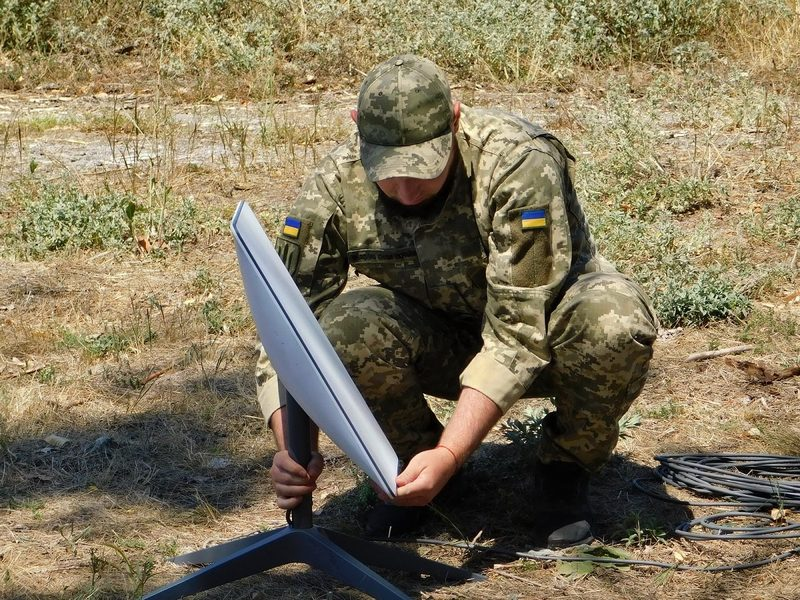

"Do not ask me as a private individual to make kill decisions"
At DealBook, Musk drew a line between Starlink and the government-run Starshield and accused Volodymyr Zelenskyy of misstating which one was slowed.
Asked by Sorkin to explain "what really happened" with Starlink and Starshield in Ukraine, Musk said "there is no private individual who has helped Ukraine more than I have," and that without Starlink, Ukraine's "entire line would have collapsed," according to a transcript of the interview. "Even to this present day, Starlink provides the backbone of communications for the Ukrainian military," he said.
"Starlink is a civilian system. It is not meant to be used for offensive drone strikes that kill people. If you want to do that, you need to do Starshield, which is a separate system that is controlled by the U.S. government. But do not ask me as a private individual to make kill decisions."
Starlink in Ukraine carries a speed limit "of the fastest road speed limit in Ukraine, which I think is about 80 miles an hour," he said. When Sorkin noted that Zelenskyy says Starshield is the system that was slowed, Musk answered, "That's false," and later, "He's lying. And what he is actually saying is he wants to use Starlink for offensive military operations," The Verge reported. Zelenskyy had said on Wednesday that speed restrictions remained on Starshield, hampering Ukraine's ability to intercept Russian missiles and drones, and that "we are discussing this with the American side," CNBC reported. The Wall Street Journal reported on Oct. 20 that Musk had ordered the slowdown, CNBC noted.


"Exactly": the Sevastopol record
Musk also told Sorkin that Walter Isaacson's biography got the 2022 Sevastopol episode wrong: "At the time, the Starlink satellite beams were not on in Crimea," because activating them in a sanctioned country would have needed State Department approval. At 12:31 a.m. EST Thursday he answered "Exactly" to an X Freeze summary of that answer, which said "there's an enormous difference between shutting down an existing service and refusing to activate coverage that was never available."
An hour earlier, at 11:29 p.m. Wednesday, he had reposted his own post from Oct. 3, 2022, with the words "4 years ago." It read: "We gave Starlinks to Ukraine & lost $80M+ in doing so, while putting SpaceX & myself at serious risk of Russian cyberattack."
"Diversify away. Don't use Starlink."
Earlier in the day, Canadian Prime Minister Mark Carney told the summit he had seen "cases, including in Ukraine, where a dependence on Starlink or Starshield" went from "an advantage to a huge vulnerability," and that Canada, Korea, Japan and Europe are asking how to "build, at a minimum, a redundant system or a sovereign system," CNBC reported. When Sorkin raised other countries looking for alternatives, Musk said: "Diversify away. Don't use Starlink."
Phones from space, cells on the roof
SpaceX will start launching its Direct to Cell version 2 constellation next year with about "40 times the bandwidth" of version 1, Musk said, and a rooftop "micro cell tower thing that you can just put on your roof like a Starlink dish," using the 800 MHz band SpaceX bought, goes into production "I think, next year" to reach phones indoors. "I don't think this means like AT&T, Verizon, or others go out of business," he said.
"Starlink saves lives." Musk quoted a post at 4:17 p.m. EST Wednesday about Mato Grosso sending Starlink antennas to flood-hit families in Aguaçu, a rural district of Cuiabá, Brazil. Acting governor Max Russi said about 200 millimeters of rain had flooded homes and that no deaths or injuries had been reported, Olhar Direto reported (translated).